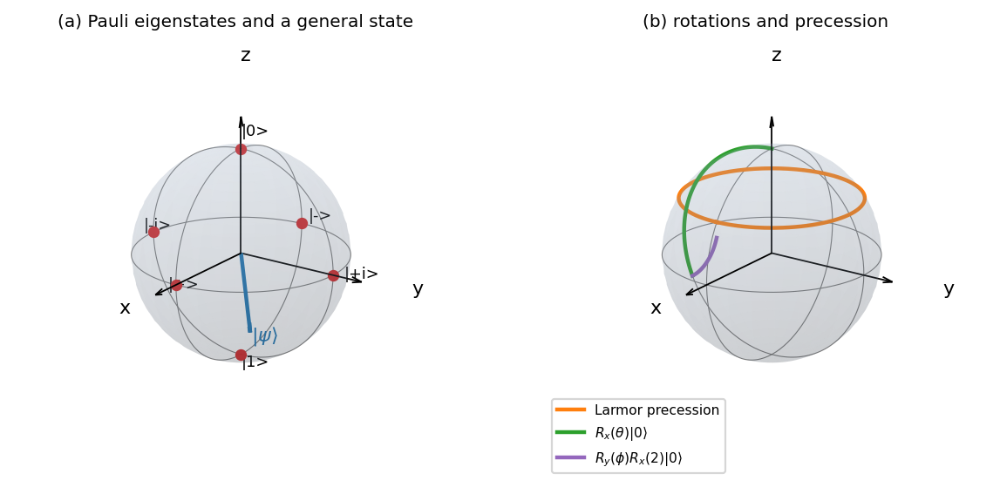
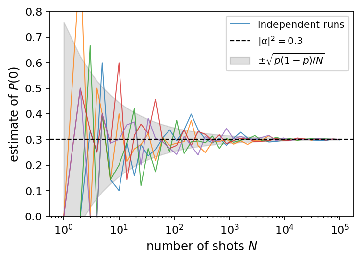
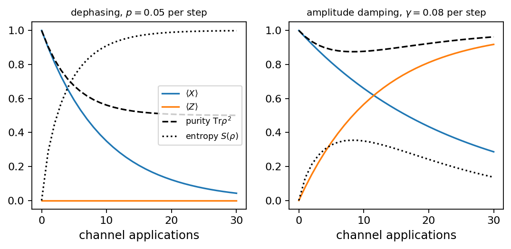
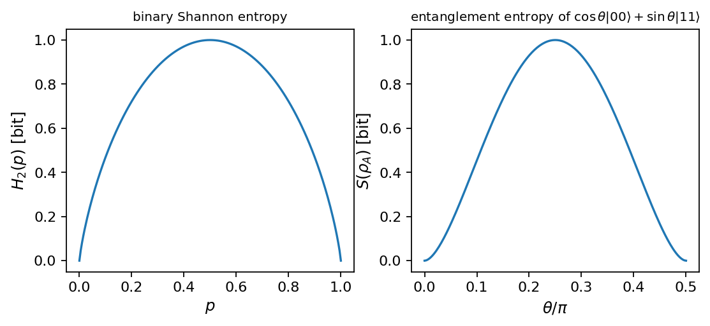
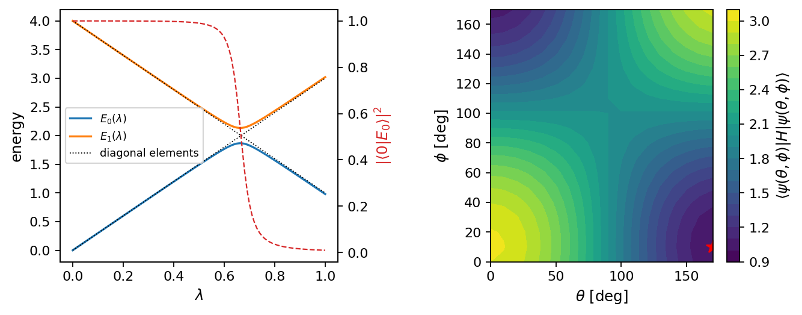

Chapter 2: Fundamentals of Quantum Computation#
This chapter reviews the basic concepts of quantum computing needed for the rest of the book. We define qubits and quantum states using Dirac notation and the Bloch sphere representation. Elementary quantum gates (Pauli rotations, Hadamard, phase gate, CNOT) and universal gate sets are introduced, along with quantum circuits and circuit diagrams. Key principles such as superposition and entanglement are explained. Finally, we cover measurement postulates, decoherence, and simple quantum protocols (like teleportation and superdense coding). These protocols exemplify how quantum information processing differs fundamentally from classical computing.
# Put every BookPrograms/chapter*/ and BookPrograms/common/ on sys.path
import sys, pathlib
root = pathlib.Path.cwd().resolve()
while not (root / 'BookPrograms').is_dir() and root.parent != root:
root = root.parent
sys.path[:0] = [str(p) for p in (root / 'BookPrograms').iterdir() if p.is_dir()]
import numpy as np
Quantum computing in a nutshell#
A quantum computer is a well-controlled, out-of-equilibrium quantum many-body system that we intend to use to perform a calculation. Such a system can be described at several levels, from the underlying physics, usually expressed through a Hamiltonian with its energies and time scales, up to the abstract representation used to formulate quantum algorithms, the so-called gate-based quantum computer. This chapter is about that abstract level: the states a quantum computer can be in, the operations we can perform on them, and what we can learn by measuring them. The chapters that follow build on these notions when they map many-body Hamiltonians onto qubits (Chapter 4), simulate their time evolution (Chapter 5) and extract eigenvalues from them (Chapters 6–8).
The gate-based quantum computer is defined as follows. We have a set of \(N\) two-level systems, called quantum bits or qubits (for instance the spin of an electron, or two selected levels of a superconducting circuit), each of which can be in the states \(\vert 0\rangle\) and \(\vert 1\rangle\). The most general state of the quantum computer has the form
where the sum runs over all qubit values \(i_a \in \{0,1\}\), and \(\vert i_1i_2\cdots i_N\rangle\) is a shorthand for the tensor product \(\vert i_1\rangle\otimes \vert i_2\rangle\otimes\cdots\otimes\vert i_N\rangle\), to be defined in Section Tensor products. The tensor \(\Psi_{i_1i_2\cdots i_N}\) can be thought of as a large vector containing \(2^N\) complex numbers. The potential capabilities of quantum computers stem from the fact that this vector is exponentially large and, once \(N\gtrsim 50\), cannot even be stored in a classical computer.
When one operates a quantum computer, one initializes it in a simple state \(\vert \Psi^{(0)}\rangle\), usually \(\vert \Psi^{(0)}\rangle = \vert 000\cdots 0\rangle\), and the state then evolves according to the Schr”odinger equation, which transforms \(\vert \Psi^{(n)}\rangle\) into \(\vert \Psi^{(n+1)}\rangle = U^{(n)} \vert \Psi^{(n)}\rangle\), with the evolution operator
where \(T\) is the time-ordering operator and \(H(t)\) is the Hamiltonian of the system (we set \(\hbar=1\) throughout this book unless stated otherwise). In physics one starts from \(H(t)\). In quantum computing one starts instead from the evolution operators \(U^{(n)}\), assuming that somebody else has worked out how to engineer the appropriate Hamiltonians. The different evolution operators that one uses are called gates and fall into two main categories, depending on whether they act on a single qubit or on two qubits.
A single-qubit gate is a \(2\times 2\) unitary matrix \(U\) acting on one qubit, \(U\vert i\rangle = \sum_j U_{ji}\vert j\rangle\). In terms of the full state \(\Psi^{(n)}\), a single-qubit gate on qubit \(a\) acts as
and a two-qubit gate on qubits \(a\) and \(b\) is a \(4\times 4\) unitary matrix which transforms the state as
Depending on the hardware, some gates are easier to implement than others, but a small set of them suffices to build any unitary operation on the \(2^N\)-dimensional space, as we discuss in Section Universal gate sets.
The last ingredient of the gate model is measurement. When qubit \(a\) is measured, it returns the value \(\alpha\in\{0,1\}\) with probability
and the state of the computer becomes
That is essentially it. Equations (2.1)–(2.6) describe completely what a gate-based quantum computer does, and the field of quantum algorithms consists of using these rules to perform useful computations. In a nutshell, a quantum computer allows one to perform a subset of linear algebra, namely matrix-vector multiplications with very special matrices (the gates, which act only on a few indices and belong to a fixed set of unitary matrices) on exponentially large vectors. The appeal of quantum computers clearly comes from the exponentially large size of these vectors.
There is however a strong downside: at the end of the calculation one does not hold the exponentially large vector of \(2^N\) amplitudes, but only a much smaller amount of information, namely \(N\) bits drawn from the distribution \(|\Psi_{i_1\cdots i_N}|^2\). This is one of the two Achilles’ heels of quantum computing, often referred to as the input/output bottleneck. A second caveat is that the largest part of the \(2^N\)-dimensional Hilbert space will remain forever inaccessible, to quantum computers as well as to classical methods. This follows from a simple counting argument. Suppose the quantum circuit consists of \(D\) layers of gates (\(D\) being the depth of the circuit), that every layer is packed with as many gates as possible, and that each gate is parametrized by a few angles. The dimension of the manifold of states that such circuits can reach is then \(\bigO(DN)\), which for any realistic depth is vastly smaller than \(2^N\). With \(N=100\) qubits the Hilbert space has dimension \(2^{100}\approx 10^{30}\); even with a depth \(D=10^6\) the reachable manifold has twenty orders of magnitude fewer degrees of freedom. The question is therefore whether the reachable subspace contains the relevant part of Hilbert space, and, conversely, whether the relevant part is amenable to classical simulation. Much of the discussion of variational algorithms in Chapter 7 revolves around this question; the so-called barren plateaus, for instance, have been traced back to the fact that most states in the \(\bigO(DN)\)-dimensional manifold are essentially featureless [Larocca2025].
To make all of the above precise we need a modest amount of linear algebra, which we now review in the language of quantum mechanics. Readers who want a more thorough treatment, including norms, matrix factorizations and the numerical eigenvalue algorithms that we lean on throughout the book, will find it in Appendix B. Standard references for the material of this chapter are the books of Nielsen and Chuang [NielsenChuang], Scherer [Scherer2019] and, for readers who prefer to learn by programming, Hundt [Hundt2022].
Linear algebra in Dirac notation#
Vectors, inner and outer products#
Vectors, matrices and higher-order tensors are written in boldface, with lower-case letters for vectors and upper-case letters for matrices; see Section Notations and conventions of the appendix for the full set of conventions. A vector with \(n\) complex components is written as
where the dagger denotes the Hermitian conjugate, the complex conjugate of the transpose. We start counting from zero, so that the first component \(x_0\) multiplies the basis state \(\vert 0\rangle\) below and the index of a component agrees with the integer encoded by a bit string of qubits.
Throughout the book we use Dirac’s bra-ket notation and replace the boldfaced vector by a ket and its Hermitian conjugate by a bra,
The inner product of two vectors of the same length is
so that \(\langle x\vert x\rangle=\sum_i|x_i|^2\) is real and non-negative, while in general
As an example, for \(\vert x\rangle = \begin{bmatrix} 1-i & 2+i\end{bmatrix}^T\)
we find \(\langle x\vert x\rangle = (1+i)(1-i)+(2-i)(2+i) = 7\), and the
normalized vector is \(\vert x\rangle/\sqrt{7}\). For
\(\vert x\rangle = \begin{bmatrix} -1 & 2i & 1\end{bmatrix}^T\) and
\(\vert y\rangle = \begin{bmatrix} 1 & 0 & i\end{bmatrix}^T\) we get
\(\langle x\vert y\rangle = -1+i\) but \(\langle y\vert x\rangle = -1-i\), as
Eq. (2.10) demands. The program dirac_algebra.py
reproduces these numbers.
The outer product of two vectors is the matrix
with elements \(x_iy_j^*\). Outer products are the building blocks of projection operators and of density matrices, and they play a central role in all of quantum mechanics.
Hermitian, unitary and normal matrices#
A general \(n\times n\) matrix \(\matr{A}\) has elements \(a_{ij}\) with the row index \(i\) and column index \(j\) both starting from zero; matrix-vector and matrix-matrix products are \(y_i = \sum_j a_{ij}x_j\) and \(c_{ij}=\sum_k a_{ik}b_{kj}\), see Section Matrices: definitions and algebraic operations of the appendix. Three classes of matrices dominate quantum mechanics:
Hermitian (self-adjoint) matrices, \(\matr{A}=\matr{A}^{\dagger}\), that is \(a_{ij}=a_{ji}^*\). Observables are represented by Hermitian operators; their eigenvalues are real and their eigenvectors can be chosen orthonormal.
Unitary matrices, \(\matr{U}\matr{U}^{\dagger}=\matr{U}^{\dagger}\matr{U}=\matr{I}\), so that \(\matr{U}^{-1}=\matr{U}^{\dagger}\). The time evolution of a closed quantum system, and hence every gate, is unitary.
Normal matrices, which commute with their adjoint, \([\matr{A},\matr{A}^{\dagger}]=0\). A matrix is normal if and only if it is diagonalizable by a unitary transformation. Hermitian and unitary matrices are both normal.
The relations \(\matr{A}=\matr{A}^T\) (symmetric), \(\matr{A}=(\matr{A}^T)^{-1}\) (real orthogonal) and \(\matr{A}=\matr{A}^*\) (real) are the real-valued counterparts, and Table B.1 of the appendix lists them together with the conditions on the matrix elements.
Unitary transformations are important because they preserve inner products. If \(\vert \phi_i\rangle=\matr{U}\vert \psi_i\rangle\) for two states \(\vert\psi_i\rangle\) and \(\vert\psi_j\rangle\), then
so norms and orthogonality are preserved: unitary transformations are rotations in state space. Since the inverse of a unitary matrix is its Hermitian conjugate, every unitary transformation is reversible. This is why quantum mechanics is often described as a reversible theory with a probabilistic outcome; the irreversibility enters only through measurement, Section Measurements. Section Unitary transformations and preservation of orthogonality of the appendix contains further discussion.
Computational basis states, projectors and superposition#
Consider a two-level system whose two states are represented by the state vectors \(\vert\phi_0\rangle\) and \(\vert\phi_1\rangle\). These could be selected degrees of freedom of a single particle (fermion or boson), or effective many-body degrees of freedom. In actual realizations of quantum computers one searches for candidate systems where two low-lying states can be isolated and controlled; in many-body physics, where the number of degrees of freedom explodes, one is similarly always looking for effective ways to reduce the dimensionality to something a given many-body method can handle. We relabel the two states as the orthonormal computational basis
with \(\langle 0\vert 1\rangle=0\) and \(\langle 0\vert 0\rangle=\langle 1\vert 1\rangle=1\). With these two states we can write the identity operator as a sum of outer products, the completeness relation
and define the projection operators
They are idempotent, \(\matr{P}^2=\matr{P}\) and \(\matr{Q}^2=\matr{Q}\), they commute and satisfy \(\matr{P}\matr{Q}=0\), and their determinants vanish, so they cannot be used as unitary transformations. They do however play a central role in defining measurements, and in the many-body chapters in defining effective model spaces.
The quantum mechanical counterpart of a classical bit, which takes only the values \(0\) or \(1\), is a qubit in a general superposition of the two computational basis states,
where the complex coefficients \(\alpha = \langle 0 \vert \psi \rangle\) and \(\beta =\langle 1 \vert \psi\rangle\) are the overlaps of the state with the basis states. Normalization requires
Acting with the projection operators on \(\vert\psi\rangle\) we obtain
that is, \(\matr{P}\) projects out the \(\vert 0\rangle\) component of the state and \(\matr{Q}\) the \(\vert 1\rangle\) component. The outer product of the state with itself,
is the density matrix of the state, with unit trace \(\mathrm{Tr}\,\rho=|\alpha|^2+|\beta|^2=1\). We return to density matrices in Section Density matrices.
The Pauli matrices#
The Pauli matrices
play a role in quantum computing that is hard to overstate: they are the simplest gates, every single-qubit gate is generated by them, every operator on \(N\) qubits can be expanded in tensor products of them, and, after the mappings of Chapter 4, every many-body Hamiltonian becomes a weighted sum of such tensor products. In the physics literature they are often written \(\sigma_x,\sigma_y,\sigma_z\); we use both notations, with \(X,Y,Z\) preferred whenever we talk about gates. The Pauli matrices are Hermitian and unitary at the same time, they are involutory,
their determinants equal \(-1\), and they obey the commutation and anticommutation relations
which can be summarized as \(XY=iZ\) and cyclic permutations. Acting with \(X\) on the computational basis states gives
a spin flip, which is the quantum analogue of the classical NOT gate. On a superposition, \(X(\alpha\vert 0\rangle+\beta\vert 1\rangle) = \beta\vert 0\rangle+\alpha\vert 1\rangle\). The matrix \(Z\) leaves \(\vert 0\rangle\) unchanged and multiplies \(\vert 1\rangle\) by \(-1\), a relative phase shift, and \(Y=iXZ\) combines the two. The computational basis is the eigenbasis of \(Z\) with eigenvalues \(\pm 1\); the eigenbases of \(X\) and \(Y\) are the states \(\vert\pm\rangle\) and \(\vert\pm i\rangle\) introduced in Section Qubits and the Bloch sphere.
Two further \(2\times 2\) matrices appear again and again. The Hadamard matrix
creates superpositions from the basis states,
and the phase matrix
multiplies the \(\vert 1\rangle\) component by \(i\). Note that \(H=(X+Z)/\sqrt{2}\) is Hermitian and unitary, so \(H^2=\matr{I}\), while \(S^2=Z\). The identity \(HZH=X\), which follows from Eq. (2.22), is the reason why a measurement in the eigenbasis of \(X\) can be performed by first applying a Hadamard gate and then measuring in the computational basis, see Section Measuring one qubit of a register and in other bases. We do not use a special symbol to distinguish the Hadamard gate from a Hamiltonian; the context, and in the many-body chapters the hat on \(\op{H}\), makes the meaning clear.
Tensor products#
Consider two vectors of length two, \(\vert x \rangle = \begin{bmatrix} x_0 & x_1 \end{bmatrix}^T\) and \(\vert y \rangle = \begin{bmatrix} y_0 & y_1 \end{bmatrix}^T\). Their tensor product (also called Kronecker product) is the vector of length four
Applied to the computational basis states this gives the two-qubit basis
where, for instance, \(\vert 01\rangle = \vert 0\rangle\otimes\vert 1\rangle\). The bit string labelling a basis state, read as a binary number with the first qubit as the most significant bit, is the index of the single non-zero component: \(\vert 00\rangle=\vert 0\rangle\), \(\vert 01\rangle=\vert 1\rangle\), \(\vert 10\rangle=\vert 2\rangle\), \(\vert 11\rangle=\vert 3\rangle\) in the decimal labelling that is sometimes convenient. The construction extends to any number of qubits, \(\vert 000\rangle = \vert 0\rangle\otimes\vert 0\rangle\otimes\vert 0\rangle\) being a vector of length eight with a one in the first position, and in general \(N\) qubits span a space of dimension \(2^N\). This is the origin of Eq. (2.1), and we take care in the programs of this chapter to store the amplitudes \(\Psi_{i_1\cdots i_N}\) in exactly this order.
The tensor product of two \(2\times 2\) matrices is the \(4\times 4\) matrix
and the essential rule for computing with tensor products is
A single-qubit gate \(U\) acting on qubit \(a\) of an \(N\)-qubit register is the operator \(\matr{I}\otimes\cdots\otimes U\otimes\cdots\otimes\matr{I}\) with \(U\) in position \(a\), and Eq. (2.3) is nothing but this operator written out in components. Section Tensor products of the appendix collects further properties.
Spectral decomposition of Hermitian operators#
Let \(\matr{A}\) be a Hermitian operator on a Hilbert space of dimension \(n\) and let \(\vert\psi\rangle\) be an eigenvector with eigenvalue \(\lambda\), \(\matr{A}\vert\psi\rangle = \lambda\vert\psi\rangle\). The equation \((\matr{A}-\lambda\matr{I})\vert\psi\rangle = 0\) has a non-trivial solution only if \(\det(\matr{A}-\lambda\matr{I})=0\), the characteristic equation discussed in Section The algebraic eigenvalue problem of the appendix. For a Hermitian matrix the \(n\) eigenvalues \(\lambda_i\) are real and the eigenvectors \(\vert i\rangle\), \(i=0,\dots,n-1\), form an orthonormal basis. Expanding an arbitrary state in this eigenbasis, \(\vert \psi \rangle = \sum_{i}\alpha_i\vert i\rangle\) with \(\sum_i|\alpha_i|^2=1\), and acting with \(\matr{A}\) gives
Since the projector \(\matr{P}_j=\vert j\rangle\langle j\vert\) extracts the component \(\matr{P}_j\vert\psi\rangle = \alpha_j\vert j\rangle\), we can rewrite this as \(\matr{A}\vert\psi\rangle = \sum_i\lambda_i\matr{P}_i\vert\psi\rangle\), and because the state was arbitrary we conclude that
This is the spectral decomposition of a Hermitian (more generally, of a normal) operator. The projectors are orthogonal, \(\matr{P}_i\matr{P}_j=\delta_{ij}\matr{P}_i\), and complete, \(\sum_i\matr{P}_i=\matr{I}\). Two consequences will be used constantly. First, any function of the operator is defined by acting on the eigenvalues,
which is how we compute \(e^{-iHt}\) for a Hamiltonian \(H\) in Section From Hamiltonians to gates and \(\rho\log\rho\) for a density matrix in Section Entropy and entanglement entropy. Second, the spectral decomposition of an observable exhaustively specifies a measurement of it, as we show in Section Measurements.
As a two-dimensional example, let \(\vert\psi_a\rangle = \alpha_0\vert 0\rangle+\alpha_1\vert 1\rangle\) and \(\vert\psi_b\rangle = \beta_0\vert 0\rangle+\beta_1\vert 1\rangle\) be the eigenstates of a Hermitian \(2\times 2\) matrix with eigenvalues \(\lambda_a\) and \(\lambda_b\). Then
For the Pauli matrix \(Z\) the eigenstates are the computational basis states
themselves and \(Z = \matr{P}-\matr{Q}\) with the projectors of
Eq. (2.15); for \(X\) they are the Hadamard-rotated states of
Eq. (2.25) and
\(X = \vert +\rangle\langle +\vert - \vert -\rangle\langle -\vert\). The
program dirac_algebra.py performs the decomposition numerically
for a complex Hermitian matrix and verifies Eq. (2.33) for the
exponential.
Qubits and the Bloch sphere#
A normalized qubit state \(\vert \psi \rangle = \alpha \vert 0 \rangle +\beta\vert 1\rangle\) is specified by two complex numbers subject to one real constraint, \(|\alpha|^2+|\beta|^2=1\), leaving three real parameters. One more is unobservable: multiplying the state by a global phase \(e^{i\gamma}\) changes no inner product, no probability and no expectation value, so \(\vert\psi\rangle\) and \(e^{i\gamma}\vert\psi\rangle\) describe the same physical state. We can therefore choose \(\alpha\) real and non-negative and write
The two angles are the polar and azimuthal angles of a point on the unit sphere, the Bloch sphere shown in Fig. 2.1. The north pole \(\theta=0\) is \(\vert 0\rangle\), the south pole \(\theta=\pi\) is \(\vert 1\rangle\), and every superposition with equal weights lies on the equator, where \(\phi\) measures the relative phase between the two amplitudes. The half angle \(\theta/2\) in Eq. (2.35) is what makes orthogonal states, such as \(\vert 0\rangle\) and \(\vert 1\rangle\), antipodal on the sphere rather than perpendicular.

Figure 2.1: The Bloch sphere. (a) The six eigenstates of the Pauli matrices sit at the ends of the three axes, and a general state \(\vert\psi\rangle\) with \(\theta=2.0\) and \(\phi=0.7\) is drawn as a vector. (b) The trajectory traced by a spin precessing in a magnetic field along \(z\) (Larmor precession, Section From Hamiltonians to gates), a rotation \(R_x(\theta)\) about the \(x\) axis starting from \(\vert 0\rangle\), and a subsequent rotation \(R_y(\phi)\) about the \(y\) axis; the two-angle family \(R_y(\phi)R_x(\theta)\vert 0\rangle\) is the variational ansatz of Section A first Hamiltonian: the two-level system. Produced by bloch_sphere.py.
The Cartesian coordinates of the point are the expectation values of the three Pauli matrices, the Bloch vector
as one verifies by inserting Eq. (2.35). For a pure state \(|\vec{r}|=1\). We shall see in Section Density matrices that mixed states fill the interior of the ball, and that the density matrix of a qubit can be written in terms of its Bloch vector alone. Table 2.1 lists the six eigenstates of the Pauli matrices together with their Bloch angles. The states \(\vert\pm\rangle = (\vert 0\rangle\pm\vert 1\rangle)/\sqrt{2}\) are the \(X\) eigenstates on the \(\pm x\) axis, the states \(\vert\pm i\rangle = (\vert 0\rangle\pm i\vert 1\rangle)/\sqrt{2}\) are the \(Y\) eigenstates on the \(\pm y\) axis, and \(\vert 0\rangle,\vert 1\rangle\) are the \(Z\) eigenstates on the \(\pm z\) axis. Every unitary operation on one qubit is a rotation of the Bloch sphere, as we show in Section Single-qubit gates; the Hadamard gate, for example, is a rotation by \(\pi\) about the axis \((\uvec{x}+\uvec{z})/\sqrt{2}\), which maps the \(z\) axis onto the \(x\) axis and thereby \(\vert 0\rangle\) onto \(\vert +\rangle\).
state |
operator |
eigenvalue |
\(\theta\) |
\(\phi\) |
Bloch vector |
|---|---|---|---|---|---|
\(\vert 0\rangle\) |
\(Z\) |
\(+1\) |
\(0\) |
\(0\) |
\((0,0,1)\) |
\(\vert 1\rangle\) |
\(Z\) |
\(-1\) |
\(\pi\) |
\(0\) |
\((0,0,-1)\) |
\(\vert +\rangle = (\vert 0\rangle+\vert 1\rangle)/\sqrt{2}\) |
\(X\) |
\(+1\) |
\(\pi/2\) |
\(0\) |
\((1,0,0)\) |
\(\vert -\rangle = (\vert 0\rangle-\vert 1\rangle)/\sqrt{2}\) |
\(X\) |
\(-1\) |
\(\pi/2\) |
\(\pi\) |
\((-1,0,0)\) |
\(\vert +i\rangle = (\vert 0\rangle+i\vert 1\rangle)/\sqrt{2}\) |
\(Y\) |
\(+1\) |
\(\pi/2\) |
\(\pi/2\) |
\((0,1,0)\) |
\(\vert -i\rangle = (\vert 0\rangle-i\vert 1\rangle)/\sqrt{2}\) |
\(Y\) |
\(-1\) |
\(\pi/2\) |
\(3\pi/2\) |
\((0,-1,0)\) |
Table 2.1: Eigenstates of the Pauli matrices, their eigenvalues, Bloch angles
and Bloch vectors. Produced by bloch_sphere.py.
The conversion between amplitudes and Bloch angles is a few lines of
code. The following functions from bloch_sphere.py are used by
several of the programs of this chapter.
import numpy as np
from gates import X, Y, Z
def bloch_state(theta, phi):
"""|psi> = cos(theta/2)|0> + e^{i phi} sin(theta/2)|1>."""
return np.array([np.cos(theta / 2), np.exp(1j * phi) * np.sin(theta / 2)])
def bloch_angles(psi):
"""Inverse of bloch_state, removing the global phase first."""
psi = np.asarray(psi, dtype=complex) / np.linalg.norm(psi)
psi = psi * np.exp(-1j * np.angle(psi[0])) # make the |0> amplitude real
theta = 2 * np.arccos(np.clip(psi[0].real, -1, 1))
phi = np.angle(psi[1]) if abs(psi[1]) > 1e-12 else 0.0
return theta, phi % (2 * np.pi)
def bloch_vector(psi):
"""r = (<X>, <Y>, <Z>) for a pure single-qubit state."""
return np.array([np.vdot(psi, P @ psi).real for P in (X, Y, Z)])
psi = bloch_state(2.0, 0.7)
print(bloch_vector(psi), bloch_angles(np.exp(0.3j) * psi))
[ 0.69546903 0.58578549 -0.41614684] (np.float64(2.0), np.float64(0.7))
The last line checks that a global phase changes neither the Bloch vector nor the recovered angles.
Measurements#
The projective measurement postulate#
Armed with the spectral decomposition we can now state how quantum mechanics describes a measurement. The postulate is that mutually exclusive measurement outcomes correspond to orthogonal projection operators. Let the observable \(\matr{A}\) have the spectral decomposition \(\matr{A}=\sum_i\lambda_i\matr{P}_i\) of Eq. (2.32), with projectors that are idempotent, mutually orthogonal and sum to the identity, \(\sum_i\matr{P}_i=\matr{I}\). A measurement of \(\matr{A}\) on a system in the state \(\vert\psi\rangle\) yields one of the eigenvalues \(\lambda_i\), with probability
which is the Born rule. Completeness of the projectors guarantees \(\sum_i\mathrm{Prob}(\lambda_i)=\langle\psi\vert\psi\rangle=1\). Immediately after the measurement the system is in the normalized state
the collapse of the state onto the eigenspace of the observed eigenvalue; a second measurement of the same observable therefore returns the same value with certainty. The expectation value of the observable follows from the Born rule as
For a single qubit measured in the computational basis, the projectors are \(\matr{P}_0=\vert 0\rangle\langle 0\vert\) and \(\matr{P}_1=\vert 1\rangle\langle 1\vert\), and for the state \(\vert\psi\rangle=\alpha\vert 0\rangle+\beta\vert 1\rangle\) we obtain
with post-measurement states
which are the basis states up to an irrelevant global phase. The measured observable is \(Z=\matr{P}_0-\matr{P}_1\), with \(\langle Z\rangle = |\alpha|^2-|\beta|^2\), the \(z\) component of the Bloch vector. Since a measurement can only yield one of the two basis states, the amplitudes \(\alpha\) and \(\beta\) are never observed directly: the only way to learn about them is to prepare the same state many times and to collect statistics, a point we return to in Section Statistics of repeated measurements.
It is useful to rewrite the Born rule as a trace. Using the cyclic property \(\mathrm{Tr}(\matr{A}\matr{B}\matr{C})=\mathrm{Tr}(\matr{C}\matr{A}\matr{B})\) and \(\mathrm{Tr}(\matr{A}\vert\psi\rangle\langle\psi\vert) = \langle\psi\vert\matr{A}\vert\psi\rangle\),
with \(\rho=\vert\psi\rangle\langle\psi\vert\) the density matrix of Eq. (2.19). For the qubit,
whose trace is \(|\alpha|^2\), in agreement with Eq. (2.40). The trace form is the one that generalizes to mixed states in Section Density matrices.
Measuring one qubit of a register and in other bases#
For an \(N\)-qubit state, a measurement of qubit \(a\) alone in the computational basis corresponds to the projectors \(\matr{P}^{(a)}_\alpha = \matr{I}\otimes\cdots\otimes\vert\alpha\rangle\langle\alpha\vert\otimes\cdots\otimes\matr{I}\), which act as the identity on all other qubits. Inserting them into the Born rule gives Eq. (2.5), the marginal probability obtained by summing \(|\Psi|^2\) over the values of the unmeasured qubits, and the collapse rule Eq. (2.6), which sets to zero every amplitude incompatible with the outcome and renormalizes the rest. The unmeasured qubits are in general left in a state that depends on the outcome, the mechanism behind the correlations of entangled states discussed in Section Two qubits and entanglement.
A measurement in a basis other than the computational one is performed by rotating the basis first. To measure \(X\), whose eigenstates are \(\vert\pm\rangle\), we note that \(H\vert\pm\rangle = \vert 0\rangle,\vert 1\rangle\) and therefore
that is, we apply a Hadamard gate and then measure in the computational basis. This is the operational content of the identity \(X=HZH\). In the same way \(Y\) is measured by applying \(S^{\dagger}\) followed by \(H\). Real quantum hardware only ever measures in the computational basis, and the expectation value of a Hamiltonian written as a sum of Pauli strings, as in Chapter 7, is obtained by measuring each string in its own rotated basis.
Statistics of repeated measurements#
A single measurement returns one bit and destroys the state. To estimate \(\mathrm{Prob}(0)=|\alpha|^2\) we prepare the state and measure it \(N_s\) times, in the jargon of the field \(N_s\) shots, and count the fraction \(\hat p\) of outcomes \(0\). The count is binomially distributed, so the estimate has the standard deviation
which decreases only as \(1/\sqrt{N_s}\): to gain one more decimal digit one needs a hundred times more shots. Figure 2.2 shows five independent experiments on a qubit with \(|\alpha|^2=0.3\). This shot noise is a fundamental cost of every quantum algorithm that ends with an expectation value, and it dominates the resource estimates of the variational methods in Chapter 7.

Figure 2.2: Estimate of \(\mathrm{Prob}(0)\) for the qubit \(\vert\psi\rangle = \sqrt{0.3}\vert 0\rangle+\sqrt{0.7}\,e^{0.4i}\vert 1\rangle\) as a function of the number of shots, for five independent sequences of measurements. The shaded band is the one-standard-deviation interval of Eq. (2.45). Produced by measurement.py.
The state-vector simulator used throughout this chapter implements the
measurement postulate directly. The class StateVector in
statevector.py stores the \(2^N\) amplitudes of
Eq. (2.1) as a NumPy array; a gate on a subset of qubits
is applied by reshaping the array into an \(N\)-index tensor and contracting
the relevant indices, Eq. (2.3), and the marginal
probabilities and collapse of Eqs. (2.5)–(2.6)
become
class StateVector:
def marginal(self, qubit):
"""P(qubit = 0), P(qubit = 1) by summing |Psi|^2 over the others."""
p = self.probabilities().reshape((2,) * self.n)
axes = tuple(a for a in range(self.n) if a != qubit)
return p.sum(axis=axes)
def measure(self, qubit, rng=None, outcome=None):
"""Draw an outcome, zero the incompatible amplitudes, renormalise."""
p = self.marginal(qubit)
if outcome is None:
rng = np.random.default_rng() if rng is None else rng
outcome = int(rng.random() < p[1])
tensor = self.psi.reshape((2,) * self.n).copy()
keep = [slice(None)] * self.n
keep[qubit] = 1 - outcome
tensor[tuple(keep)] = 0.0
self.psi = tensor.reshape(self.dim) / np.sqrt(p[outcome])
return outcome, float(p[outcome])
Simulating a measurement classically is easy precisely because the simulator holds the full amplitude vector; the quantum computer does not, and this asymmetry is the reason why Eq. (2.5) is the only window we have on the state.
Density matrices#
Pure and mixed states#
A state vector describes a system whose preparation is completely known; such a state is called pure. Very often the preparation is not completely known: the system may be one member of an ensemble in which the state \(\vert\psi_i\rangle\) occurs with probability \(p_i\), it may be part of a larger system that we do not control, or it may have interacted with an environment that we do not observe. In all these cases the state of the system is itself uncertain and only probabilistic statements about the preparation can be made. This is what density matrices describe, and they describe pure states as a special case.
Consider the ensemble \(\{p_i,\vert\psi_i\rangle\}\) and a measurement with projectors \(\matr{P}_x\). The probability of outcome \(x\) is the average of the Born rule (2.42) over the ensemble,
where we have defined the density matrix or density operator
Every measurable quantity depends on the ensemble only through \(\rho\), so two ensembles with the same density matrix are physically indistinguishable. From the definition, \(\rho\) is Hermitian, positive semidefinite (all its eigenvalues are non-negative) and has unit trace,
and conversely every matrix with these three properties is a valid density matrix. By the spectral decomposition there is always an orthonormal basis \(\{\vert b_i\rangle\}\) in which
so that any density matrix can be viewed as an ensemble of orthogonal pure states with the eigenvalues as probabilities. A state is pure if and only if one eigenvalue equals one and the others vanish, which can be tested without diagonalizing:
The quantity \(\mathrm{Tr}(\rho^2)\) is called the purity; it is at most one, and its smallest value \(1/d\) is attained by the maximally mixed state \(\rho=\matr{I}/d\) of a \(d\)-dimensional system, which represents complete ignorance about the preparation. The expectation value of an observable and the post-measurement state after outcome \(x\) are
and under a unitary transformation, in particular under the time evolution of a closed system with Hamiltonian \(H\),
The trace and the eigenvalues, and therefore the purity, are invariant under unitary transformations: \(\mathrm{Tr}(U\rho U^{\dagger})=\mathrm{Tr}(U^{\dagger}U\rho)=1\). Unitary evolution can never turn a mixed state into a pure one, nor the reverse.
For a single qubit, the four matrices \(\matr{I},X,Y,Z\) form a basis of the \(2\times 2\) Hermitian matrices, and the conditions (2.48) imply that every density matrix can be written as
where \(\vec{r}=(\mathrm{Tr}(\rho X),\mathrm{Tr}(\rho Y),\mathrm{Tr}(\rho Z))\) is the Bloch vector of Eq. (2.36). The eigenvalues of Eq. (2.53) are \((1\pm|\vec{r}|)/2\) and the purity is \((1+|\vec{r}|^2)/2\), so pure states lie on the surface of the Bloch sphere, mixed states fill its interior, and the maximally mixed state \(\rho=\matr{I}/2\) sits at the centre. An equal mixture of \(\vert 0\rangle\) and \(\vert 1\rangle\) and an equal mixture of \(\vert +\rangle\) and \(\vert -\rangle\) both give \(\rho=\matr{I}/2\), a first illustration that different ensembles can be the same state. The superposition \((\vert 0\rangle+\vert 1\rangle)/\sqrt{2}\), on the other hand, has \(\rho=\frac{1}{2}\begin{bmatrix} 1 & 1\\ 1 & 1\end{bmatrix}\): the difference between the superposition and the mixture is entirely in the off-diagonal elements, the coherences, and it becomes visible when we measure \(X\) rather than \(Z\), since \(\langle X\rangle = 1\) for the superposition and \(0\) for the mixture.
Reduced density matrices and the partial trace#
The second, and for many-body physics the most important, source of mixed states is the description of a subsystem. Let a system be composed of two parts \(A\) and \(B\) with Hilbert space \(\mathcal{H}_A\otimes\mathcal{H}_B\) and density matrix \(\rho_{AB}\), and let \(\matr{O}_A\) be an observable acting on \(A\) alone, that is \(\matr{O}_A\otimes\matr{I}_B\) on the full space. Its expectation value can be written as \(\mathrm{Tr}_A(\rho_A\matr{O}_A)\) in terms of the reduced density matrix
where the sum runs over an orthonormal basis of \(B\). The operation \(\mathrm{Tr}_B\) is the partial trace over \(B\); on outer products it acts as
which together with linearity determines it completely. In components, for two qubits with \(\rho_{AB}\) indexed by the pairs \((a,b)\) and \((c,d)\), \((\rho_A)_{ac}=\sum_b \rho_{(ab),(cb)}\). The reduced density matrix is the complete description of \(A\) for an observer who has no access to \(B\), and it is in general mixed even when \(\rho_{AB}\) is pure. Section Two qubits and entanglement turns this observation into the definition of entanglement.
The class DensityMatrix in density_matrix.py implements
Eqs. (2.47)–(2.54). The partial trace is a
reshape followed by traces over pairs of axes:
class DensityMatrix:
def partial_trace(self, keep):
"""Trace out every qubit not in `keep`."""
keep = [keep] if isinstance(keep, int) else sorted(keep)
trace_out = [q for q in range(self.n) if q not in keep]
t = self.rho.reshape((2,) * (2 * self.n)) # row indices, then column indices
for k, q in enumerate(trace_out):
axis_row = q - k # axes already removed shift left
axis_col = axis_row + (self.n - k)
t = np.trace(t, axis1=axis_row, axis2=axis_col)
d = 2 ** len(keep)
return DensityMatrix(t.reshape(d, d), len(keep))
def von_neumann_entropy(self, base=2):
lam = np.clip(np.linalg.eigvalsh(self.rho), 0, None)
lam = lam[lam > 1e-15]
return float(-np.sum(lam * np.log(lam)) / np.log(base))
We will use the entropy method in Section Entropy and entanglement entropy.
Decoherence#
Density matrices also describe what happens when a qubit interacts with an environment that we do not observe: after the interaction the joint state of qubit and environment may be pure, but the qubit alone is described by the reduced density matrix, and information has leaked into correlations with the environment. This loss of coherence, decoherence, is the dominant obstacle for present-day quantum hardware and the reason for the error-correction methods of Chapter 9. The most general evolution of a subsystem that starts uncorrelated with its environment is a quantum channel, which can always be written in the Kraus form
a generalization of Eq. (2.52) that preserves the three properties (2.48) but not the purity. Two elementary channels illustrate the idea. In the dephasing channel a \(Z\) error hits the qubit with probability \(p\),
so the populations are untouched while the coherences shrink by the factor \(1-2p\); after many applications the qubit ends in the diagonal mixture \(\mathrm{diag}(\rho_{00},\rho_{11})\), and the Bloch vector has collapsed onto the \(z\) axis. Physically this is what a fluctuating magnetic field along \(z\) does to a spin. In the amplitude damping channel the excited state \(\vert 1\rangle\) decays to \(\vert 0\rangle\) with probability \(\gamma\), as in spontaneous emission, with Kraus operators
which drives every state towards the pure state \(\vert 0\rangle\), so that the purity first drops and then recovers. Figure 2.3 shows both channels applied repeatedly to the state \(\vert +\rangle\). On hardware, the time scales on which the coherences and the populations decay are called \(T_2\) and \(T_1\); they set the depth of the circuits that can be run before the output is dominated by noise.

Figure 2.3: Bloch-vector components, purity and von Neumann entropy of a qubit initially in \(\vert +\rangle\) under repeated application of the dephasing channel (left) and the amplitude-damping channel (right). Dephasing drives the state to the maximally mixed state at the centre of the Bloch ball; amplitude damping drives it to \(\vert 0\rangle\), through a mixed intermediate state. Produced by decoherence.py.
Two qubits and entanglement#
Bell states#
We now consider a system composed of two subsystems \(A\) and \(B\), each with computational basis states \(\vert 0\rangle\) and \(\vert 1\rangle\). The subsystems may be single particles, single qubits, or composite many-particle systems of a given symmetry; the results of this section are independent of what they represent. The computational basis of the composite system consists of the four product states of Eq. (2.28), \(\vert ab\rangle = \vert a\rangle_A\otimes\vert b\rangle_B\). From them we can build another orthonormal basis, the Bell states
They are normalized, for instance \(\langle\Phi^{+}\vert\Phi^{+}\rangle = \frac{1}{2}(\langle 00\vert 00\rangle+\langle 00\vert 11\rangle+\langle 11\vert 00\rangle+\langle 11\vert 11\rangle)=1\), and mutually orthogonal, for instance \(\langle \Phi^{+}\vert\Phi^{-}\rangle = \frac{1}{2}(1-0+0-1)=0\); four orthonormal vectors in a four-dimensional space form a basis. The corresponding density matrices, in the ordering \(\{\vert 00\rangle,\vert 01\rangle,\vert 10\rangle,\vert 11\rangle\}\), are
Measuring one of the qubits of a Bell state determines the state of the other. To see this, let us measure qubit \(A\) of \(\vert\Phi^+\rangle\) in the computational basis. The projectors on the two-qubit space are
and the Born rule gives
with the post-measurement states
The outcome on \(A\) is completely random, but once it is known the state of \(B\) is fixed, even though the measurement took place locally on \(A\). In the language of density matrices, \(p(k)=\mathrm{Tr}(\matr{P}_k\rho_{\Phi^+})=1/2\) and \(\rho^{(0)}=\vert 00\rangle\langle 00\vert\), \(\rho^{(1)}=\vert 11\rangle\langle 11\vert\): the two qubits are perfectly correlated.
Separable and entangled states#
A state like \(\vert 00\rangle = \vert 0\rangle_A\otimes\vert 0\rangle_B\) is a product state: each subsystem is in a definite pure state of its own, and a measurement on \(A\) tells us nothing we did not already know about \(B\). The Bell state \(\vert\Phi^+\rangle\) cannot be written in this form for any choice of single-qubit states, as one verifies by trying: \((\alpha\vert 0\rangle+\beta\vert 1\rangle)\otimes(\gamma\vert 0\rangle+\delta\vert 1\rangle)\) has the \(\vert 01\rangle\) component \(\alpha\delta\) and the \(\vert 10\rangle\) component \(\beta\gamma\), and both vanish only if \(\alpha\delta=\beta\gamma=0\), which is incompatible with non-zero \(\vert 00\rangle\) and \(\vert 11\rangle\) components \(\alpha\gamma\) and \(\beta\delta\). This leads to the definition: a pure bipartite state \(\vert\psi\rangle_{AB}\) is entangled if it cannot be written as a product state \(\vert\psi\rangle_A\otimes\vert\phi\rangle_B\), and separable otherwise. For mixed states the definition is that \(\rho_{AB}\) is separable if it is a convex combination of product density matrices,
and entangled otherwise.
A familiar example from atomic physics is the ground state of the helium atom with two electrons in the \(1s\) orbital. Each single-electron state is the tensor product of the spatial orbital and a spinor, \(\vert 1s, s, m_s\rangle\), and the antisymmetric spin-singlet ground state is
which in the spin degrees of freedom is precisely the Bell state \(\vert\Psi^-\rangle\): the spins of the two electrons are maximally entangled. The Slater determinants of Chapter 3 are entangled states of this kind, and much of the difficulty of the many-body problem can be phrased as the difficulty of representing highly entangled states with few parameters.
Reduced density matrices of entangled states#
The partial trace makes the distinction between product and entangled states quantitative. Take \(\mathrm{Tr}_B\) of \(\rho_{\Phi^+}\) term by term with Eq. (2.55):
so that
The same holds for all four Bell states: although the two-qubit state is pure, each qubit on its own is in the maximally mixed state, with purity \(1/2\) and a vanishing Bloch vector. All the information in a Bell state resides in the correlations between the qubits and none in the qubits themselves. For a product state, on the other hand, the reduced density matrices are pure (Exercise 2.6). Purity of the reduced density matrix is therefore a test for entanglement of a pure bipartite state, and its entropy, introduced next, a measure of it.
The Schmidt decomposition#
A systematic way to analyse a pure bipartite state is the Schmidt decomposition, which is an application of the singular value decomposition of Section The singular value decomposition in the appendix. Any pure state can be expanded in product states of orthonormal bases \(\vert i\rangle_A\) and \(\vert j\rangle_B\),
where the coefficients form a \(d_A\times d_B\) matrix \(\matr{C}\). Its singular value decomposition \(\matr{C}=\matr{U}\matr{\Sigma}\matr{V}^{\dagger}\), with unitary \(\matr{U}\) and \(\matr{V}\) and a diagonal \(\matr{\Sigma}\) with non-negative entries \(\sigma_k\), gives \(c_{ij}=\sum_k u_{ik}\sigma_k v^{\dagger}_{kj}\) and therefore
where the new bases \(\vert k\rangle_A\) and \(\vert k\rangle_B\) are orthonormal because \(\matr{U}\) and \(\matr{V}\) are unitary. The non-negative numbers \(\sigma_k\) are the Schmidt coefficients, they satisfy \(\sum_k\sigma_k^2=1\), and their number \(d\), the Schmidt rank, is at most \(\min(d_A,d_B)\). A state is a product state if and only if its Schmidt rank is one, and it is entangled if the rank is larger than one. Moreover, the reduced density matrices follow at once from Eq. (2.81),
so both have the same non-zero eigenvalues \(\sigma_k^2\). For the Bell
states \(\sigma_0=\sigma_1=1/\sqrt{2}\), the largest possible spread; in
general the state \(\frac{1}{\sqrt{d}}\sum_{i}\vert ii\rangle\) with equal
coefficients is called maximally entangled. The program entanglement.py computes the Schmidt
decomposition of arbitrary two-qubit states with numpy.linalg.svd
and checks Eqs. (2.81) and (2.82).
Entropy and entanglement entropy#
Entropy quantifies uncertainty. For a classical random variable with outcomes \(x\) of probability \(p(x)\), the information content of a single outcome is \(-\log_2 p(x)\): a rare event carries much information, a certain one none. The average information, the Shannon entropy, is
measured in bits, with the convention \(0\log 0=0\). For a binary variable with probabilities \(p\) and \(1-p\) we get the binary entropy
shown in the left panel of Fig. 2.4: \(H_2(0)=H_2(1)=0\) when the outcome is certain, and \(H_2(1/2)=1\) bit when our knowledge is no better than a coin toss. The function is continuous, non-negative, additive for independent variables, and maximal for the uniform distribution, which is what one asks of a measure of ignorance.
The quantum counterpart replaces the probability distribution by the density matrix. The von Neumann entropy is
where \(\lambda_i\) are the eigenvalues of \(\rho\) and the second form follows from the spectral decomposition (2.49) and Eq. (2.33): in the eigenbasis, \(\rho\) is the diagonal matrix \(\matr{D}=\mathrm{diag}(\lambda_0,\dots,\lambda_{n-1})\), the unitary that diagonalizes it drops out of the trace, and \(-\mathrm{Tr}(\matr{D}\log_2\matr{D}) = -\sum_i\lambda_i\log_2\lambda_i\) is the Shannon entropy of the eigenvalue distribution. A pure state has eigenvalues \(\{1,0,\dots\}\) and \(S=0\); the maximally mixed state in \(d\) dimensions has \(S=\log_2 d\), its largest possible value; and \(S\) is invariant under unitary transformations, so it does not change during the evolution of a closed system. One cannot simply use the classical definition with the diagonal elements of \(\rho\) in some basis, because the result would depend on the basis; the eigenvalues are the only basis-independent probabilities associated with \(\rho\).
For a pure bipartite state the von Neumann entropy of the reduced density matrix,
is the entanglement entropy. It vanishes for product states, it equals one bit for the Bell states, and it is symmetric between the two subsystems because both reduced density matrices have the same eigenvalues \(\sigma_k^2\). The right panel of Fig. 2.4 shows \(S_A\) for the family \(\cos\theta\vert 00\rangle+\sin\theta\vert 11\rangle\), which interpolates between the product state \(\vert 00\rangle\) at \(\theta=0\), the Bell state at \(\theta=\pi/4\) and the product state \(\vert 11\rangle\) at \(\theta=\pi/2\); Table 2.2 gives the numbers. Entanglement entropy is the central diagnostic for the classical simulability of many-body states: tensor-network methods, mentioned in Chapter 3, are efficient precisely for states whose entanglement entropy between any bipartition stays small.

Figure 2.4: Left: the binary Shannon entropy \(H_2(p)\) of Eq. (2.84). Right: the entanglement entropy \(S(\rho_A)\) of the two-qubit state \(\cos\theta\vert 00\rangle+\sin\theta\vert 11\rangle\), which reaches one bit for the Bell state at \(\theta=\pi/4\). Produced by entanglement.py.
\(\theta/\pi\) |
\(0\) |
\(0.05\) |
\(0.10\) |
\(0.15\) |
\(0.20\) |
\(0.25\) |
|---|---|---|---|---|---|---|
\(S(\rho_A)\) [bit] |
\(0\) |
\(0.1659\) |
\(0.4545\) |
\(0.7340\) |
\(0.9300\) |
\(1.0000\) |
Table 2.2: Entanglement entropy of \(\cos\theta\vert 00\rangle+\sin\theta\vert 11\rangle\),
whose Schmidt coefficients are \(\cos\theta\) and \(\sin\theta\). Produced by
entanglement.py.
The following excerpt from entanglement.py computes the reduced
density matrix and entropy of the Bell states with the classes introduced
above; the printed table reproduces Eq. (2.79).
import numpy as np
from density_matrix import DensityMatrix
bell = {"Phi+": [1, 0, 0, 1], "Phi-": [1, 0, 0, -1],
"Psi+": [0, 1, 1, 0], "Psi-": [0, 1, -1, 0]}
for name, v in bell.items():
rho_AB = DensityMatrix.from_state(np.array(v) / np.sqrt(2))
rho_A = rho_AB.partial_trace(keep=0)
print(name, rho_A.rho.real.round(3).tolist(),
"purity", rho_A.purity(), "S =", rho_A.von_neumann_entropy())
def entanglement_entropy(psi):
return DensityMatrix.from_state(psi).partial_trace(0).von_neumann_entropy()
for theta in np.linspace(0, np.pi / 2, 11):
print(f"{theta/np.pi:5.2f} {entanglement_entropy([np.cos(theta), 0, 0, np.sin(theta)]):.4f}")
Phi+ [[0.5, 0.0], [0.0, 0.5]] purity 0.4999999999999998 S = 1.0000000000000002
Phi- [[0.5, 0.0], [0.0, 0.5]] purity 0.4999999999999998 S = 1.0000000000000002
Psi+ [[0.5, 0.0], [0.0, 0.5]] purity 0.4999999999999998 S = 1.0000000000000002
Psi- [[0.5, 0.0], [0.0, 0.5]] purity 0.4999999999999998 S = 1.0000000000000002
0.00 0.0000
0.05 0.1659
0.10 0.4545
0.15 0.7340
0.20 0.9300
0.25 1.0000
0.30 0.9300
0.35 0.7340
0.40 0.4545
0.45 0.1659
0.50 0.0000
Quantum gates#
From Hamiltonians to gates#
Quantum gates are physical actions applied to the system that carries the qubits. Mathematically they are unitary matrices acting on the normalized vectors that represent the qubits; physically they are the time evolution generated by a Hamiltonian that the experimenter switches on for a controlled time. The time-dependent Schr”odinger equation
has, for a time-independent Hamiltonian, the formal solution
and because \(H\) is Hermitian the time-evolution operator \(U(t,t_0)\) is unitary, \(U^{\dagger}=U^{-1}\). It satisfies \(U(t_0,t_0)=\matr{I}\), \(U(t,t')U(t',t'')=U(t,t'')\) and \(U(t,t')^{\dagger}=U(t',t)\), so a sequence of evolutions under different Hamiltonians is a product of unitaries, which is what a sequence of gates is. When the Hamiltonian depends on time, Eq. (2.88) is replaced by the time-ordered exponential of Eq. (2.2); the interaction picture and the Dyson series that make this precise are the subject of Chapter 5, where we discuss how to implement \(e^{-iHt}\) for a many-body Hamiltonian as a circuit.
The simplest example is a spin-\(1/2\) in a magnetic field, the working principle of nuclear magnetic resonance and, in essence, of every qubit platform. The magnetic moment \(\vec{\mu}=\gamma\vec{S}\) couples to the field through \(H=-\vec{\mu}\cdot\vec{B}\), and for a constant field along \(z\) this becomes
where \(\omega_L\) is the Larmor frequency. The computational basis states \(\vert 0\rangle\) and \(\vert 1\rangle\) are the eigenstates of \(H_z\) with energies \(\mp\omega_L/2\), and using Eq. (2.33), which for an operator \(\matr{A}\) with eigenvector \(\vert a\rangle\) reads \(e^{\matr{A}}\vert a\rangle = \sum_n \frac{1}{n!}\matr{A}^n\vert a\rangle = e^{a}\vert a\rangle\), the time evolution of the state (2.35) is
where in the last step we dropped a global phase. The polar angle is constant and the azimuthal angle decreases linearly in time: the Bloch vector precesses about the \(z\) axis at the Larmor frequency, as drawn in Fig. 2.1(b). Letting the field act for a time \(t\) therefore implements a rotation about \(z\) by the angle \(\omega_L t\), the gate \(R_z(-\omega_L t)\) defined below. A field along \(x\) or \(y\), or an oscillating field resonant with \(\omega_L\), produces rotations about the other axes, and this is how single-qubit gates are realized in NMR and, with microwave or laser pulses, in superconducting and trapped-ion processors.
Single-qubit gates#
A single-qubit gate is a \(2\times 2\) unitary matrix. Up to a global phase, which we may always discard, it is an element of the group \(\mathrm{SU}(2)\) and can be parametrized by three angles as
Acting on \(\vert 0\rangle\) it produces the Bloch state (2.35) with angles \(\theta\) and \(\phi\), so every point on the Bloch sphere can be reached from \(\vert 0\rangle\) with a single gate. The Pauli matrices form a basis of the Lie algebra \(\mathfrak{su}(2)\), and exponentiating them yields the rotation gates. For any matrix with \(\matr{A}^2=\matr{I}\) the power series of the exponential splits into even and odd terms,
which applied to the Pauli matrices with \(\alpha=\theta/2\) gives
The gate \(R_{\sigma}(\theta)\) rotates the Bloch vector by the angle \(\theta\) about the axis \(\sigma=x,y,z\), and more generally \(R_{\uvec{n}}(\theta)=e^{-i\theta\,\uvec{n}\cdot\vec{\sigma}/2}\) rotates it about the unit vector \(\uvec{n}\); the factor \(1/2\) in the exponent is the same half angle that appears in the Bloch parametrization. Rotations by \(2\pi\) give \(-\matr{I}\) rather than \(\matr{I}\), which is harmless for a single qubit but matters for controlled gates. Any single-qubit gate can be decomposed into three rotations,
as one verifies by multiplying the three matrices of
Eq. (2.93). This is the Euler-angle decomposition of a
rotation, and it is what a compiler uses to express an arbitrary
single-qubit operation in terms of the rotations that the hardware
provides. Table 2.3 collects the gates we use most, with
their matrices and their interpretation as rotations. The Pauli gates are
rotations by \(\pi\) about the coordinate axes (up to a global phase,
\(X = iR_x(\pi)\) and so on); the phase gate \(S\) and the \(\pi/8\) gate \(T\)
are rotations about \(z\) by \(\pi/2\) and \(\pi/4\), with \(T^2=S\) and \(S^2=Z\);
the Hadamard gate is the rotation by \(\pi\) about the axis
\((\uvec{x}+\uvec{z})/\sqrt{2}\), which exchanges the \(x\) and \(z\) axes and
therefore satisfies \(HXH=Z\) and \(HZH=X\). All the identities in the
table are verified numerically by gates.py.
gate |
symbol |
matrix |
Bloch-sphere action |
||
|---|---|---|---|---|---|
Pauli \(X\) (NOT) |
\(X\) |
$\begin{bmatrix} 0 |
1 |
||
1 |
0\end{bmatrix}$ |
rotation by \(\pi\) about \(x\) |
|||
Pauli \(Y\) |
\(Y\) |
$\begin{bmatrix} 0 |
-i |
||
i |
0\end{bmatrix}$ |
rotation by \(\pi\) about \(y\) |
|||
Pauli \(Z\) |
\(Z\) |
$\begin{bmatrix} 1 |
0 |
||
0 |
-1\end{bmatrix}$ |
rotation by \(\pi\) about \(z\) |
|||
Hadamard |
\(H\) |
$\frac{1}{\sqrt{2}}\begin{bmatrix} 1 |
1 |
||
1 |
-1\end{bmatrix}$ |
rotation by \(\pi\) about \((\uvec{x}+\uvec{z})/\sqrt{2}\) |
|||
phase |
\(S\) |
$\begin{bmatrix} 1 |
0 |
||
0 |
i\end{bmatrix}$ |
rotation by \(\pi/2\) about \(z\) |
|||
\(\pi/8\) |
\(T\) |
$\begin{bmatrix} 1 |
0 |
||
0 |
e^{i\pi/4}\end{bmatrix}$ |
rotation by \(\pi/4\) about \(z\) |
|||
phase shift |
\(P(\lambda)\) |
$\begin{bmatrix} 1 |
0 |
||
0 |
e^{i\lambda}\end{bmatrix}$ |
rotation by \(\lambda\) about \(z\) |
|||
rotations |
\(R_x,R_y,R_z(\theta)\) |
Eq. (2.93) |
rotation by \(\theta\) about \(x,y,z\) |
||
general |
\(U(\theta,\phi,\lambda)\) |
Eq. (2.91) |
\(R_z(\phi)R_y(\theta)R_z(\lambda)\) |
||
controlled-NOT |
\(\mathrm{CNOT}\), \(\mathrm{CX}\) |
$\begin{bmatrix} 1 |
0 |
0 |
0 |
0 |
1 |
0 |
0 |
||
0 |
0 |
0 |
1 |
||
0 |
0 |
1 |
0\end{bmatrix}$ |
flips target if control is \(\vert 1\rangle\) |
|
controlled-\(Z\) |
\(\mathrm{CZ}\) |
\(\mathrm{diag}(1,1,1,-1)\) |
phase \(-1\) on \(\vert 11\rangle\) |
||
controlled-\(U\) |
\(\mathrm{C}U\) |
\(\vert 0\rangle\langle 0\vert\otimes\matr{I}+\vert 1\rangle\langle 1\vert\otimes U\) |
\(U\) on target if control is \(\vert 1\rangle\) |
||
swap |
\(\mathrm{SWAP}\) |
$\begin{bmatrix} 1 |
0 |
0 |
0 |
0 |
0 |
1 |
0 |
||
0 |
1 |
0 |
0 |
||
0 |
0 |
0 |
1\end{bmatrix}$ |
\(\vert xy\rangle\to\vert yx\rangle\) |
Table 2.3: Elementary quantum gates. Single-qubit gates act on the basis
\(\{\vert 0\rangle,\vert 1\rangle\}\), two-qubit gates on
\(\{\vert 00\rangle,\vert 01\rangle,\vert 10\rangle,\vert 11\rangle\}\) with the
first qubit as control. The \(P(\lambda)\) family contains \(Z=P(\pi)\),
\(S=P(\pi/2)\) and \(T=P(\pi/4)\). Verified by gates.py.
Two-qubit gates#
A two-qubit gate is a \(4\times 4\) unitary matrix, an element of \(\mathrm{SU}(4)\) up to a phase. Tensor products \(U_1\otimes U_2\) of single-qubit gates are two-qubit gates, but they cannot create entanglement: they map product states onto product states, by Eq. (2.30). The gates that do create entanglement are the controlled gates. Given a single-qubit gate \(U\), the controlled-\(U\) gate acts on a control qubit \(\vert x\rangle\) and a target qubit \(\vert y\rangle\): it applies \(U\) to the target if the control is in the state \(\vert 1\rangle\) and does nothing if the control is in \(\vert 0\rangle\), while the control itself is never changed. Written as a sum over the two cases,
The most important controlled gate is the controlled-NOT or CNOT gate, \(\mathrm{CX}\), obtained with \(U=X\),
that is, \(\mathrm{CNOT}\vert x y\rangle = \vert x, y\oplus x\rangle\) with
\(\oplus\) the addition modulo two. On a superposition of the control it
does something no classical gate can do: applied to
\((\vert 0\rangle+\vert 1\rangle)/\sqrt{2}\otimes\vert 0\rangle\) it produces
the Bell state \(\vert\Phi^+\rangle\), because the sum over the two values of
the control is carried through to the target. The controlled-\(Z\) gate
\(\mathrm{CZ}=\mathrm{diag}(1,1,1,-1)\) is symmetric in control and target and
related to the CNOT by conjugation with Hadamard gates on the target,
\(\mathrm{CNOT} = (\matr{I}\otimes H)\,\mathrm{CZ}\,(\matr{I}\otimes H)\), a
direct consequence of \(HZH=X\). Finally the SWAP
gate exchanges the two qubits, \(\mathrm{SWAP}\vert xy\rangle=\vert yx\rangle\);
it is not a controlled gate, but it can be built from three CNOT gates with
alternating control and target, a circuit identity shown in
Fig. 2.5 and verified in circuit.py. The
three-qubit Toffoli gate, a CNOT with two controls, completes the standard
repertoire; it is universal for classical reversible computation.
Universal gate sets#
A set of gates is universal if every unitary operation on \(N\) qubits can be approximated to arbitrary precision by a circuit built from that set. Two facts make universality tractable. First, any unitary on \(N\) qubits can be decomposed exactly into single-qubit gates and CNOT gates, so the pair {arbitrary single-qubit rotations, CNOT} is universal; this is the standard choice when compiling for hardware whose native operations are parametrized rotations and one entangling gate. Second, the single-qubit rotations can themselves be approximated by a finite set: the gates \(H\) and \(T\) generate a dense subset of \(\mathrm{SU}(2)\), so {\(H\), \(T\), CNOT} is universal, and the Solovay–Kitaev theorem guarantees that an accuracy \(\epsilon\) costs only \(\bigO(\log^c(1/\epsilon))\) gates with a small constant \(c\). The discrete set matters because the fault-tolerant constructions of Chapter 9 can implement a finite set of gates on encoded qubits, and \(T\) is typically by far the most expensive of them. The gates \(H\), \(S\) and CNOT alone generate the Clifford group, which is not universal: circuits made of Clifford gates can be simulated efficiently on a classical computer (the Gottesman–Knill theorem), a reminder that entanglement by itself is not the source of quantum computational power.
Quantum circuits#
Quantum circuits are diagrammatic representations of quantum algorithms; they are read a little like music, with one line per qubit. The horizontal direction is time, running from left to right. Each qubit is a horizontal line, a quantum wire, labelled on the left with its initial state, usually \(\vert 0\rangle\). Gates are boxes placed on the wires, and are applied in chronological order from left to right, so that the circuit \(A\) followed by \(B\) corresponds to the operator product \(BA\), in the opposite order from the diagram. A controlled gate is drawn as a dot on the control wire connected by a vertical line to the gate on the target wire, and the CNOT target is drawn as \(\oplus\). Measurements are drawn as a meter symbol and turn the quantum wire into a classical one, drawn doubled. Figure 2.5 shows the circuit that prepares \(\vert\Phi^+\rangle\) from \(\vert 00\rangle\), the other three Bell states being obtained by an additional \(X\) on the second qubit and/or \(Z\) on the first, and the decomposition of the SWAP gate into three CNOT gates.

Figure 2.5: (a) The circuit that prepares the Bell state \(\vert\Phi^+\rangle\): a Hadamard gate on the first qubit followed by a CNOT with the first qubit as control. (b) The SWAP gate as three CNOT gates with alternating control and target. Both identities are verified in circuit.py.
Let us follow the Bell circuit step by step, since the same pattern returns in every algorithm of this book. The Hadamard gate on the first qubit produces \(\frac{1}{\sqrt{2}}(\vert 0\rangle+\vert 1\rangle)\otimes\vert 0\rangle =\frac{1}{\sqrt{2}}(\vert 00\rangle+\vert 10\rangle)\), and the CNOT then flips the second qubit in the second term only, \(\frac{1}{\sqrt{2}}(\vert 00\rangle+\vert 11\rangle)=\vert\Phi^+\rangle\). Two gates and no interaction with anything else have produced a maximally entangled state; the inverse circuit, a CNOT followed by a Hadamard, maps the four Bell states back onto the four computational basis states and is therefore a Bell measurement when followed by a measurement in the computational basis. This is the tool we need for the protocols of Section Two protocols: superdense coding and teleportation.
Describing circuits in code is as natural as drawing them. The class
Circuit in circuit.py is a list of Gate objects,
each holding a matrix, its target qubits and optional control qubits; a
circuit is executed by applying the gates in order to a
StateVector, and its full \(2^N\times 2^N\) unitary is obtained by
running it on every basis state. Chapters 5
and 7 build their Trotter and variational circuits with the
same class.
from circuit import Circuit
import gates as G
bell = Circuit(2).h(0).cnot(0, 1)
print(bell.draw()) # the ASCII version of the Bell circuit
print(bell.run()) # (0.7071)|00> + (0.7071)|11>
swap = Circuit(2).cnot(0, 1).cnot(1, 0).cnot(0, 1)
assert np.allclose(swap.unitary(), G.SWAP)
print(bell, "depth", bell.depth)
q0: |0>--[H]--*---
q1: |0>------(+)--
(+0.7071+0.0000j)|00> + (+0.7071+0.0000j)|11>
Circuit(2 qubits, 2 gates, depth 2) depth 2
Running the two lines above prints
q0: |0>--[H]--*---
q1: |0>------(+)--
(+0.7071+0.0000j)|00> + (+0.7071+0.0000j)|11>
The depth of a circuit, the number of layers of gates that act on disjoint qubits and can be executed in parallel, is the relevant measure of its running time on hardware and enters the counting argument of Section Quantum computing in a nutshell.
Two protocols: superdense coding and teleportation#
Entanglement is a resource. Two protocols, both using a single Bell pair shared between two parties conventionally called Alice and Bob, show what the resource buys and how the rules of Sections Measurements and Quantum gates combine into something a classical channel cannot do.
Superdense coding#
Alice wants to send Bob two classical bits \(b_1b_2\) but may transmit only one qubit. If they share the Bell state \(\vert\Phi^+\rangle\), with Alice holding the first qubit, she can do it [BennettWiesner1992]. She applies to her qubit one of the four Pauli operations
for the messages \(00\), \(01\), \(10\) and \(11\) respectively, and sends her
qubit to Bob. Since the four Bell states are orthogonal, Bob can
distinguish them perfectly: he applies the inverse of the Bell circuit, a
CNOT followed by a Hadamard on the first qubit, which maps
\(\vert\Phi^+\rangle,\vert\Psi^+\rangle,\vert\Phi^-\rangle,\vert\Psi^-\rangle\)
onto \(\vert 00\rangle,\vert 01\rangle,\vert 10\rangle,\vert 11\rangle\), and
measures both qubits in the computational basis to read \(b_1b_2\). A single
qubit thus carries two bits of classical information, twice what a qubit
could carry without shared entanglement; the entanglement was consumed in
the process. The circuit is shown in Fig. 2.6, and
protocols.py runs it for all four messages.

Figure 2.6: Superdense coding. A Bell pair is shared, Alice encodes two bits by one of four Pauli operations on her qubit and sends it, and Bob decodes with the inverse Bell circuit and two measurements.
Quantum teleportation#
Teleportation is the converse task: Alice holds a qubit in an unknown state \(\vert\psi\rangle=\alpha\vert 0\rangle+\beta\vert 1\rangle\) and wants Bob to end up with it, but she may only send classical bits [Bennett1993]. Since she cannot measure \(\alpha\) and \(\beta\), and cannot copy the state either (the no-cloning theorem, Exercise 2.10), she again uses a shared Bell pair. Number the qubits so that Alice holds qubit \(0\) in the state \(\vert\psi\rangle\) and qubit \(1\), while Bob holds qubit \(2\); qubits \(1\) and \(2\) are in \(\vert\Phi^+\rangle\). The initial three-qubit state is
Alice applies a CNOT from qubit \(0\) to qubit \(1\) and then a Hadamard to qubit \(0\), the inverse Bell circuit. The CNOT gives \(\frac{1}{\sqrt{2}}[\alpha\vert 0\rangle(\vert 00\rangle+\vert 11\rangle)+\beta\vert 1\rangle(\vert 10\rangle+\vert 01\rangle)]\), and the Hadamard turns \(\vert 0\rangle\) into \((\vert 0\rangle+\vert 1\rangle)/\sqrt{2}\) and \(\vert 1\rangle\) into \((\vert 0\rangle-\vert 1\rangle)/\sqrt{2}\). Collecting the terms according to the values \(m_0m_1\) of Alice’s two qubits,
Alice now measures her two qubits and obtains each of the four outcomes with probability \(1/4\); by Eq. (2.6) Bob’s qubit collapses onto the corresponding state in Eq. (2.99), which is \(\vert\psi\rangle\) up to a known Pauli operation. Alice sends the two bits \(m_0m_1\) to Bob over a classical channel, and Bob applies the correction
Note the order: \(Z\) acts after \(X\), so that for \(m_0m_1=11\) the state
\(\alpha\vert 1\rangle-\beta\vert 0\rangle\) first becomes
\(\alpha\vert 0\rangle-\beta\vert 1\rangle\) and then \(\alpha\vert 0\rangle+\beta\vert 1\rangle\).
The state has been transferred without any quantum system travelling from
Alice to Bob, and without Alice learning anything about \(\alpha\) and
\(\beta\); her outcomes are uniformly random. Nothing travels faster than
light, since Bob’s qubit is in the maximally mixed state \(\matr{I}/2\)
until the two classical bits arrive, and the original state is destroyed
on Alice’s side, in agreement with no-cloning. Figure 2.7
shows the circuit, and protocols.py verifies
Eq. (2.100) for two hundred random input states by comparing
Bob’s reduced density matrix with \(\vert\psi\rangle\langle\psi\vert\). The
same circuit, with the classical corrections replaced by controlled gates,
is used in Chapter 9 to move logical qubits around.

Figure 2.7: Quantum teleportation. Alice (upper two wires) performs a Bell measurement on her unknown qubit and her half of a Bell pair, sends the two outcomes to Bob over a classical channel (double lines), and Bob (lower wire) applies the Pauli correction of Eq. (2.100).
The implementation follows the circuit line by line; the measurement outcomes are drawn by the simulator and the corrections are ordinary Python conditionals, exactly as a control program on real hardware would do it.
from statevector import StateVector
from density_matrix import DensityMatrix
def teleport(psi, rng=None):
sv = StateVector.product(psi, [1, 0], [1, 0]) # qubit 0: |psi>, qubits 1,2: |00>
sv.h(1).cnot(1, 2) # Bell pair between Alice (1) and Bob (2)
sv.cnot(0, 1).h(0) # Alice's Bell measurement, basis change
m0, _ = sv.measure(0, rng=rng)
m1, _ = sv.measure(1, rng=rng)
if m1: sv.x(2) # classical corrections
if m0: sv.z(2)
return DensityMatrix.from_state(sv).partial_trace(2), (m0, m1)
A first Hamiltonian: the two-level system#
We close the chapter with the simplest quantum many-body problem there is, a system with two states, because it already contains the ingredients of the variational algorithms of Chapter 7: a Hamiltonian written in terms of Pauli operators, a parametrized circuit that prepares trial states, and an energy that is minimized over the parameters. Consider the real symmetric Hamiltonian
where \(H_0\) plays the role of a non-interacting one-body part whose eigenstates \(\vert 0\rangle\) and \(\vert 1\rangle\), with energies \(E_1\) and \(E_2\), define the computational basis, \(H_I\) an interaction with \(V_{12}=V_{21}\) by hermiticity, and \(\lambda\in[0,1]\) a coupling strength interpolating between the non-interacting and the fully interacting system. Since \(\matr{I}\) and \(Z\) span the diagonal \(2\times 2\) matrices and \(X\) the symmetric off-diagonal ones, we can rewrite both parts in the Pauli basis,
with \(E_\pm = (E_1\pm E_2)/2\), \(V_\pm=(V_{11}\pm V_{22})/2\) and \(V_o = V_{12}\). This rewriting is the one-qubit version of the mappings of Chapter 4: every Hamiltonian on \(N\) qubits is a linear combination of the \(4^N\) tensor products of Pauli matrices, and its expectation value is the corresponding combination of expectation values of Pauli strings, each of which can be measured as in Section Measuring one qubit of a register and in other bases.
We choose \(E_1=0\), \(E_2=4\), \(V_{11}=-V_{22}=3\) and \(V_{12}=V_{21}=0.2\). The left panel of Fig. 2.8 shows the two eigenvalues as functions of \(\lambda\). The diagonal elements \(E_1+\lambda V_{11}\) and \(E_2+\lambda V_{22}\) cross at \(\lambda=2/3\), but the small coupling \(V_o\) turns the crossing into an avoided crossing and interchanges the character of the eigenvectors: for \(\lambda\le 2/3\) the ground state is dominated by \(\vert 0\rangle\), with a weight above \(90\%\), while at \(\lambda=1\) its \(\vert 0\rangle\) component has dropped to \(1\%\), as Table 2.4 shows. The ground-state energy at \(\lambda=1\) is \(E_0=0.9802\).
| \(\lambda\) | \(E_0\) | \(E_1\) | \(|\langle 0\vert E_0\rangle|^2\) | |—|—|—|—| | \(0\) | \(0.0000\) | \(4.0000\) | \(1.0000\) | | \(0.3\) | \(0.8984\) | \(3.1016\) | \(0.9993\) | | \(0.6\) | \(1.7668\) | \(2.2332\) | \(0.9287\) | | \(2/3\) | \(1.8667\) | \(2.1333\) | \(0.5000\) | | \(0.7\) | \(1.8280\) | \(2.1720\) | \(0.2094\) | | \(1\) | \(0.9802\) | \(3.0198\) | \(0.0097\) |
Table 2.4: Eigenvalues of the two-level Hamiltonian
(2.101) and the weight of \(\vert 0\rangle\) in the ground
state, as functions of the coupling \(\lambda\). Produced by
two_level_system.py.
Diagonalizing a \(2\times 2\) matrix is of course trivial, but let us pretend we could only prepare states with gates and measure Pauli operators, which is the situation on a quantum computer. From Section Single-qubit gates we know that every point on the Bloch sphere can be reached from \(\vert 0\rangle\) by two rotations, and we take as trial state
a circuit with two parametrized gates. Its energy,
requires only the expectation values of \(Z\) and \(X\) in the trial state, which we would obtain from measurements in the computational basis with and without a preceding Hadamard gate, and by the variational principle it is bounded from below by the exact ground-state energy. The right panel of Fig. 2.8 shows \(E(\theta,\phi)\) at \(\lambda=1\) on a grid of angles in steps of ten degrees. The single guess \(\theta=\pi/2\), \(\phi=0.2\pi\) gives \(E=2.0000\), not impressive; the best point of the coarse grid, \(\theta=170^\circ\), \(\phi=10^\circ\), gives \(E=0.9960\), within \(0.016\) of the exact value, and a one-degree grid reduces the error to \(1.5\times 10^{-5}\). Scanning a grid is clearly not the way to proceed for more than a handful of parameters; computing the gradient of \(E(\theta,\phi)\) with respect to the angles and following it downhill is, and this leads to the variational quantum eigensolver of Chapter 7, where the same Hamiltonian, extended to two qubits, serves as the first test case.

Figure 2.8: Left: eigenvalues of the two-level Hamiltonian (2.101) as functions of \(\lambda\) (solid), the diagonal matrix elements (dotted) and the weight of \(\vert 0\rangle\) in the ground state (dashed, right axis). Right: the energy of the trial state \(R_y(\phi)R_x(\theta)\vert 0\rangle\) at \(\lambda=1\); the star marks the lowest point of the ten-degree grid. Produced by two_level_system.py.
The class TwoLevelSystem in two_level_system.py holds
the Hamiltonian in both forms and the trial state:
import numpy as np
import gates as G
class TwoLevelSystem:
def __init__(self, E1=0.0, E2=4.0, V11=3.0, V22=-3.0, V12=0.2):
self.E_plus, self.E_minus = (E1 + E2) / 2, (E1 - E2) / 2
self.V_plus, self.V_minus, self.V_o = (V11 + V22) / 2, (V11 - V22) / 2, V12
def hamiltonian(self, lam):
return ((self.E_plus + lam * self.V_plus) * G.I
+ (self.E_minus + lam * self.V_minus) * G.Z
+ lam * self.V_o * G.X)
def ansatz(self, theta, phi):
return G.Ry(phi) @ G.Rx(theta) @ np.array([1, 0], dtype=complex)
def energy(self, theta, phi, lam):
psi = self.ansatz(theta, phi)
return float(np.real(np.vdot(psi, self.hamiltonian(lam) @ psi)))
tls = TwoLevelSystem()
E0 = np.linalg.eigvalsh(tls.hamiltonian(1.0))[0]
angles = np.deg2rad(np.arange(0, 180, 10))
grid = np.array([[tls.energy(th, ph, 1.0) for ph in angles] for th in angles])
print(f"exact E0 = {E0:.4f}, best grid point E = {grid.min():.4f}")
exact E0 = 0.9802, best grid point E = 0.9960
Exercises#
Commutator identities. Prove that for operators \(\op{A}\), \(\op{B}\) and \(\op{C}\)
\([\op{A}+\op{B},\op{C}]= [\op{A},\op{C}]+[\op{B},\op{C}]\);
\([\op{A},\op{B}\op{C}]= [\op{A},\op{B}]\op{C}+\op{B}[\op{A},\op{C}]\);
\([\op{A},[\op{B},\op{C}]]+[\op{B},[\op{C},\op{A}]]+[\op{C},[\op{A},\op{B}]]=0\) (the Jacobi identity).
Pauli matrices. Derive the commutation rules \([\sigma_i,\sigma_j]\) for \(i,j=x,y,z\) and show that \(XX=YY=ZZ=\matr{I}\). Which of the Pauli matrices has the computational basis as its eigenbasis, and what are the eigenvalues? Show that \(\sigma_i\sigma_j = \delta_{ij}\matr{I}+i\epsilon_{ijk}\sigma_k\) and use it to prove that \(HZH=X\) with the Hadamard matrix \(H=(X+Z)/\sqrt{2}\).
Shared eigenvectors. Prove that two Hermitian operators \(\op{A}\) and \(\op{B}\) that commute share a basis of eigenstates. Why does this matter for the simultaneous measurement of two observables?
One-qubit gates in code. Write a function that sets up the one-qubit computational basis and applies the Pauli matrices, the Hadamard gate and the phase gate to the basis states. Verify Eqs. (2.23) and (2.25) and check that all five matrices are unitary. Then determine the Bloch angles of the resulting states with the functions of Section Qubits and the Bloch sphere.
Traces and exponentials. Prove that the trace is cyclic, \(\mathrm{Tr}(\matr{A}\matr{B}\matr{C})=\mathrm{Tr}(\matr{C}\matr{A}\matr{B})=\mathrm{Tr}(\matr{B}\matr{C}\matr{A})\). Let \(\matr{A}\) satisfy \(\matr{A}^2=\matr{I}\) and let \(\alpha\) be real; show from the power series that \(e^{i\alpha\matr{A}} = \matr{I}\cos\alpha+i\matr{A}\sin\alpha\). Does this apply to the Pauli matrices? Use it to verify the rotation matrices of Eq. (2.93) and the decomposition (2.94).
Reduced density matrices. For each of the four Bell states find the reduced density matrix of each qubit by computing the partial trace by hand, and compare with
entanglement.py. Then suppose the composite system is in the product state \(\vert a\rangle\otimes\vert b\rangle\) of pure states of \(A\) and \(B\); show that the reduced density matrix of \(A\) is the pure state \(\vert a\rangle\langle a\vert\), and similarly for \(B\).Bloch angles of Pauli eigenstates. Determine the Bloch angles \(\theta\) and \(\phi\) of the eigenstates of each Pauli matrix and compare with Table 2.1. Show that two states are orthogonal if and only if their Bloch vectors are antipodal, and that \(|\langle\phi\vert\psi\rangle|^2 = (1+\vec{r}_\phi\cdot\vec{r}_\psi)/2\).
Mixed states of a qubit. Show that Eq. (2.53) has eigenvalues \((1\pm|\vec{r}|)/2\), so that positivity requires \(|\vec{r}|\le 1\), and that the purity is \((1+|\vec{r}|^2)/2\). Compute the von Neumann entropy as a function of \(|\vec{r}|\) and plot it. Which ensembles of pure states produce the state with \(\vec{r}=(0,0,1/2)\)?
Entanglement entropy. Write the state \(\cos\theta\vert 00\rangle+\sin\theta\vert 11\rangle\) in Schmidt form and derive the analytic expression for its entanglement entropy. Extend the computation to the state \(\frac{1}{2}(\vert 00\rangle+\vert 01\rangle+\vert 10\rangle-\vert 11\rangle)\); is it entangled? Answer both by hand and with the Schmidt decomposition of
entanglement.py.No cloning. Suppose a unitary \(U\) on two qubits copies an arbitrary state, \(U\vert\psi\rangle\vert 0\rangle = \vert\psi\rangle\vert\psi\rangle\). Apply it to \(\vert 0\rangle\), \(\vert 1\rangle\) and \(\vert +\rangle\) and derive a contradiction with linearity. Explain why the teleportation protocol does not violate this theorem.
Circuits. Using the
Circuitclass, verify that (a) \(\mathrm{CNOT}=(\matr{I}\otimes H)\,\mathrm{CZ}\,(\matr{I}\otimes H)\), (b) a CNOT with control and target exchanged equals \((H\otimes H)\,\mathrm{CNOT}\,(H\otimes H)\), and (c) the circuit of Fig. 2.5(a) followed by \(X\) on the second qubit and \(Z\) on the first produces \(\vert\Psi^-\rangle\). Draw each circuit.Superdense coding and teleportation. Run
protocols.pyand modify the superdense-coding function so that the shared state is \(\vert\Psi^-\rangle\) instead of \(\vert\Phi^+\rangle\); which encoding operations must Alice now use? Then modify the teleportation function so that Bob’s correction is omitted, and compute Bob’s reduced density matrix averaged over Alice’s outcomes. Interpret the result.The two-level system. Show that with \(E_\pm=(E_1\pm E_2)/2\) the non-interacting part can be written as \(H_0=E_+\matr{I}+E_-Z\), and that with \(V_\pm=(V_{11}\pm V_{22})/2\) and \(V_o=V_{12}=V_{21}\) the interaction becomes \(H_I=V_+\matr{I}+V_-Z+V_oX\). Explain how \(\langle X\rangle\) is measured on a device that only measures in the computational basis, using \(X=HZH\). Finally compute the gradient of \(E(\theta,\phi)\) in Eq. (2.104) analytically and use gradient descent to find the minimum; compare with the grid search of Fig. 2.8.
Programs for this chapter#
Every number and figure in this chapter comes from the programs in
BookPrograms/allowbreak chapter2/ and from the shared modules in
BookPrograms/allowbreak common/ that this chapter introduces and
the later chapters reuse. All of them are imported by the notebook
Notebooks/allowbreak chapter2/allowbreak chapter2.ipynb, and all
run on numpy and matplotlib alone.
common/gates.pyThe gate matrices of Table 2.3, the rotation gates and \(U(\theta,\phi,\lambda)\), the controlled-\(U\) construction, and helpers for commutators, tensor products and unitarity checks; run as a script it verifies every gate identity quoted in the text. Instantaneous.common/statevector.pyThe classStateVector: the \(2^N\) amplitudes of Eq. (2.1), gates on arbitrary subsets of qubits by tensor contraction, marginal probabilities, projective measurement with collapse, sampling of shots, expectation values. Instantaneous.common/circuit.pyThe classesGateandCircuit: gate lists with controls, execution on aStateVector, the full unitary, depth, inverse and an ASCII drawing; run as a script it checks the Bell circuits and the SWAP identity of Fig. 2.5. Instantaneous.common/density_matrix.pyThe classDensityMatrix: ensembles, Bloch vector, purity, Born rule and post-measurement state, unitary evolution, partial trace and von Neumann entropy, and the Shannon entropy. Instantaneous.common/bookplot.pyFigure directory and matplotlib conventions shared by all chapters.dirac_algebra.pyThe worked examples of Section Linear algebra in Dirac notation: inner and outer products, projectors, Pauli algebra, tensor products, spectral decomposition of a Hermitian matrix. Instantaneous.bloch_sphere.pyBloch angles and Bloch vectors, Table 2.1 and Fig. 2.1 with the Larmor precession of Eq. (2.90). A few seconds.measurement.pyThe Born rule, post-measurement states, the \(X\)-basis measurement, marginals in a three-qubit register and the shot-noise study of Fig. 2.2. A few seconds.decoherence.pyThe dephasing and amplitude-damping channels in Kraus form and Fig. 2.3. A second.entanglement.pyBell states, measurement correlations, reduced density matrices, the Schmidt decomposition through the singular value decomposition, Table 2.2 and Fig. 2.4. A second.protocols.pySuperdense coding for all four messages and teleportation of random states, both on the state-vector simulator, with the circuit of Fig. 2.7. A second.two_level_system.pyThe two-level Hamiltonian in matrix and Pauli form, Table 2.4, the grid search over the trial state (2.103) and Fig. 2.8. A few seconds.
Running the programs of this chapter#
Each cell below runs one of the programs listed above as a script and shows the figures it writes to BookFigures/.
import runpy, time
from IPython.display import Image, display
t0 = time.time()
runpy.run_path(str(root / 'BookPrograms' / 'common/gates.py'), run_name='__main__')
for png in sorted((root / 'BookFigures' / 'chapter2').glob('*.png')):
if png.stat().st_mtime >= t0:
display(Image(str(png)))
all gate identities verified
determinants of X, Y, Z: [-1.0, -1.0, -1.0]
import runpy, time
from IPython.display import Image, display
t0 = time.time()
runpy.run_path(str(root / 'BookPrograms' / 'common/statevector.py'), run_name='__main__')
for png in sorted((root / 'BookFigures' / 'chapter2').glob('*.png')):
if png.stat().st_mtime >= t0:
display(Image(str(png)))
Bell state |Phi+> = (+0.7071+0.0000j)|00> + (+0.7071+0.0000j)|11>
marginals of qubit 0: [0.5 0.5]
1000 shots: {'00': 507, '11': 493}
outcome 1 with probability 0.5000000000000001; post-measurement state: (+1.0000+0.0000j)|11>
state-vector simulator checks passed
import runpy, time
from IPython.display import Image, display
t0 = time.time()
runpy.run_path(str(root / 'BookPrograms' / 'common/circuit.py'), run_name='__main__')
for png in sorted((root / 'BookFigures' / 'chapter2').glob('*.png')):
if png.stat().st_mtime >= t0:
display(Image(str(png)))
Circuit(2 qubits, 2 gates, depth 2)
q0: |0>--[H]--*---
q1: |0>------(+)--
state: (+0.7071+0.0000j)|00> + (+0.7071+0.0000j)|11>
q0: |0>---*--(+)--*---
q1: |0>--(+)--*--(+)--
circuit checks passed
import runpy, time
from IPython.display import Image, display
t0 = time.time()
runpy.run_path(str(root / 'BookPrograms' / 'common/density_matrix.py'), run_name='__main__')
for png in sorted((root / 'BookFigures' / 'chapter2').glob('*.png')):
if png.stat().st_mtime >= t0:
display(Image(str(png)))
rho_A for |Phi+>:
[[0.5 0. ]
[0. 0.5]]
S(rho_A) = 1.0000000000000002 bit
density-matrix checks passed
import runpy, time
from IPython.display import Image, display
t0 = time.time()
runpy.run_path(str(root / 'BookPrograms' / 'common/bookplot.py'), run_name='__main__')
for png in sorted((root / 'BookFigures' / 'chapter2').glob('*.png')):
if png.stat().st_mtime >= t0:
display(Image(str(png)))
import runpy, time
from IPython.display import Image, display
t0 = time.time()
runpy.run_path(str(root / 'BookPrograms' / 'chapter2/dirac_algebra.py'), run_name='__main__')
for png in sorted((root / 'BookFigures' / 'chapter2').glob('*.png')):
if png.stat().st_mtime >= t0:
display(Image(str(png)))
<x|x> = 7.0 normalised x = [0.378 -0.378j 0.7559+0.378j]
<x|y> = (-1+1j) <y|x> = (-1-1j)
P = |0><0| =
[[1. 0.]
[0. 0.]]
Q = |1><1| =
[[0. 0.]
[0. 1.]]
P|psi> = [0.6+0.j 0. +0.j] Q|psi> = [0.+0.j 0.+0.8j]
rho = |psi><psi| =
[[0.36+0.j 0. -0.48j]
[0. +0.48j 0.64+0.j ]]
trace = 1.0
[X,Y] = 2iZ, XY = iZ, and cyclic permutations: verified
H|0> = [0.7071+0.j 0.7071+0.j] H|1> = [ 0.7071+0.j -0.7071+0.j]
|00> = [1. 0. 0. 0.]
|01> = [0. 1. 0. 0.]
|10> = [0. 0. 1. 0.]
|11> = [0. 0. 0. 1.]
|000> = [1. 0. 0. 0. 0. 0. 0. 0.]
A (x) B =
[[0 1 0 2]
[1 0 2 0]
[0 3 0 4]
[3 0 4 0]]
eigenvalues of A: [1. 4.]
lambda = 1.0000, projector
[[ 0.6667+0.j -0.3333+0.3333j]
[-0.3333-0.3333j 0.3333+0.j ]]
lambda = 4.0000, projector
[[0.3333+0.j 0.3333-0.3333j]
[0.3333+0.3333j 0.6667+0.j ]]
exp(A) from the spectral decomposition agrees with the power series
import runpy, time
from IPython.display import Image, display
t0 = time.time()
runpy.run_path(str(root / 'BookPrograms' / 'chapter2/bloch_sphere.py'), run_name='__main__')
for png in sorted((root / 'BookFigures' / 'chapter2').glob('*.png')):
if png.stat().st_mtime >= t0:
display(Image(str(png)))
state operator eigenvalue theta phi Bloch vector
|0> Z 1 0.00π 0.00π [0. 0. 1.]
|1> Z -1 1.00π 0.00π [ 0. 0. -1.]
|+> X 1 0.50π 0.00π [ 1. 0. -0.]
|-> X -1 0.50π 1.00π [-1. 0. -0.]
|+i> Y 1 0.50π 0.50π [0. 1. 0.]
|-i> Y -1 0.50π 1.50π [ 0. -1. 0.]
Bloch angles of psi = [0.5403+0.j 0.6436+0.5421j] -> theta=2.0, phi=0.7
figure written to /home/claude/qcbook/doc/Book/BookFigures/chapter2/bloch_sphere.pdf

import runpy, time
from IPython.display import Image, display
t0 = time.time()
runpy.run_path(str(root / 'BookPrograms' / 'chapter2/measurement.py'), run_name='__main__')
for png in sorted((root / 'BookFigures' / 'chapter2').glob('*.png')):
if png.stat().st_mtime >= t0:
display(Image(str(png)))
outcome 0: probability 0.3000, post-measurement state [1.+0.j 0.+0.j]
outcome 1: probability 0.7000, post-measurement state [0. +0.j 0.9211+0.3894j]
Tr(P_0 rho) = 0.29999999999999993
<Z> = p0 - p1 = -0.40000000000000013 <X> = 0.8441663449378976
P(+) = |<+|psi>|^2 = 0.9221 = P(0) after H = 0.9221
P(qubit 1 = 0), P(qubit 1 = 1) in |Psi> = [0.5 0.5]
after finding qubit 1 = 1 the register is (+0.8525+0.0000j)|110> + (+0.5227+0.0000j)|111>
figure written to /home/claude/qcbook/doc/Book/BookFigures/chapter2/measurement_shots.pdf

import runpy, time
from IPython.display import Image, display
t0 = time.time()
runpy.run_path(str(root / 'BookPrograms' / 'chapter2/decoherence.py'), run_name='__main__')
for png in sorted((root / 'BookFigures' / 'chapter2').glob('*.png')):
if png.stat().st_mtime >= t0:
display(Image(str(png)))
rho(|+>) after one dephasing step with p = 0.1:
[[0.5 0.4]
[0.4 0.5]]
step purity (dephasing) purity (damping) <Z> (damping)
0 1.0000 1.0000 0.0000
5 0.6743 0.8877 0.3409
10 0.5608 0.8772 0.5656
20 0.5074 0.9235 0.8113
30 0.5009 0.9624 0.9180
figure written to /home/claude/qcbook/doc/Book/BookFigures/chapter2/decoherence.pdf

import runpy, time
from IPython.display import Image, display
t0 = time.time()
runpy.run_path(str(root / 'BookPrograms' / 'chapter2/entanglement.py'), run_name='__main__')
for png in sorted((root / 'BookFigures' / 'chapter2').glob('*.png')):
if png.stat().st_mtime >= t0:
display(Image(str(png)))
Bell states form an orthonormal basis: Gram matrix =
[[ 1. -0. 0. 0.]
[-0. 1. 0. 0.]
[ 0. 0. 1. -0.]
[ 0. 0. -0. 1.]]
qubit A = 0 with probability 0.50; state afterwards (+1.0000+0.0000j)|00>
qubit A = 1 with probability 0.50; state afterwards (+1.0000+0.0000j)|11>
state rho_A purity S(rho_A) Schmidt coeffs
Phi+ [[0.5, 0.0], [0.0, 0.5]] 0.500 1.000 [0.7071, 0.7071]
Phi- [[0.5, 0.0], [0.0, 0.5]] 0.500 1.000 [0.7071, 0.7071]
Psi+ [[0.5, 0.0], [0.0, 0.5]] 0.500 1.000 [0.7071, 0.7071]
Psi- [[0.5, 0.0], [0.0, 0.5]] 0.500 1.000 [0.7071, 0.7071]
product state: Schmidt rank 1 , S(rho_A) = 0.0
random state: Schmidt coefficients [0.9863 0.1647] -> S(rho_A) = 0.1798 bit
theta/pi S(rho_A)
0.00 0.0000
0.05 0.1659
0.10 0.4545
0.15 0.7340
0.20 0.9300
0.25 1.0000
0.30 0.9300
0.35 0.7340
0.40 0.4545
0.45 0.1659
0.50 0.0000
figure written to /home/claude/qcbook/doc/Book/BookFigures/chapter2/entropy.pdf

import runpy, time
from IPython.display import Image, display
t0 = time.time()
runpy.run_path(str(root / 'BookPrograms' / 'chapter2/protocols.py'), run_name='__main__')
for png in sorted((root / 'BookFigures' / 'chapter2').glob('*.png')):
if png.stat().st_mtime >= t0:
display(Image(str(png)))
superdense coding:
Alice sends 00 -> Bob reads 00
Alice sends 01 -> Bob reads 01
Alice sends 10 -> Bob reads 10
Alice sends 11 -> Bob reads 11
teleportation:
200 random states teleported exactly; outcomes of Alice's measurement: {(0, 0): 44, (0, 1): 46, (1, 0): 53, (1, 1): 57}
input state [0.8253+0.j 0.351 +0.4423j] -> Alice's bits (0, 0) -> Bob's Bloch vector [0.5794 0.7301 0.3624]
teleportation circuit before the measurements:
q0: |0>-----------*--[H]--
q1: |0>--[H]--*--(+)------
q2: |0>------(+)----------
import runpy, time
from IPython.display import Image, display
t0 = time.time()
runpy.run_path(str(root / 'BookPrograms' / 'chapter2/two_level_system.py'), run_name='__main__')
for png in sorted((root / 'BookFigures' / 'chapter2').glob('*.png')):
if png.stat().st_mtime >= t0:
display(Image(str(png)))
lambda = 1.0: eigenvalues [0.9802 3.0198]
ground state [ 0.0985+0.j -0.9951+0.j], |0>-component squared 0.0097
lambda E_0 E_1 |<0|E_0>|^2
0.000 0.0000 4.0000 1.0000
0.300 0.8984 3.1016 0.9993
0.600 1.7668 2.2332 0.9287
0.667 1.8667 2.1333 0.5000
0.700 1.8280 2.1720 0.2094
1.000 0.9802 3.0198 0.0097
single ansatz theta=pi/2, phi=0.2pi: E = 2.0000
best grid point: theta = 170 deg, phi = 10 deg, E = 0.9960, E - E_0 = 0.0158
one-degree grid: theta = 180 deg, phi = 11 deg, E - E_0 = 1.49e-05
figure written to /home/claude/qcbook/doc/Book/BookFigures/chapter2/two_level_system.pdf
